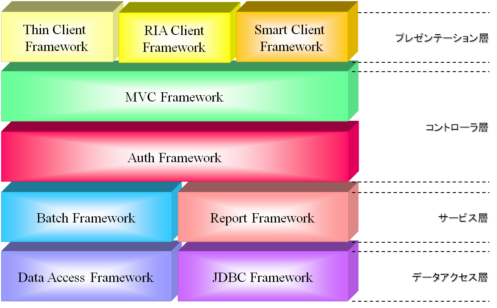

GreenEARTH Frameworkとは
GreenEARTH Frameworkとは、業務系システム開発のための総合アプリケーションフレームワークです。多くの業務アプリケーションで共通に利用される機能と、それを構築するための基盤、枠組みを提供します。GreenEARTH Frameworkは、複数のフレームワークにより構成されており、それらフレームワークを組み合わせて利用することでシステムを構築します。GreenEARTH Framework Family
GreenEARTH Frameworkは次の9つのフレームワークで構成されています。 GreenEARTH Core Frameworkとは
GreenEARTH Core Framework（以降、Core Frameworkと呼びます）は、GreenEARTH Framework Familyの各フレームワークや、フレームワークを利用して構築されたアプリケーションが、共通して利用する機能を提供します。DIコンテナの利用やログ出力などの共通機能を、Core Framework が一元管理し提供することで、フレームワークやアプリケーションが個別に用意するための開発工数が不要となり、モジュールの管理をする必要もなくなります。GreenEARTH Core Frameworkの特徴
共通機能の一元管理共通機能を集約し一元管理することで、同一機能が散在することを防ぎます。また、共通機能のみを提供することにより、各フレームワークの依存関係をシンプルでわかりやすい関係として定義することが可能になります。共通機能としてログ出力やコネクションの管理機能を提供します。
■ DIコンテナを利用したコンポーネントベースモデルの実現
Core Framework は、DIコンテナを扱う仕組みを提供します。GreenEARTH Framework Familyの各フレームワークがこの仕組みを採用することにより、フレームワーク全体を差し替え可能なコンポーネント群として構成することができます。フレームワークのコンポーネントを自由にカスタマイズできるため、アプリケーションの要件を自由に策定する事が可能になります。